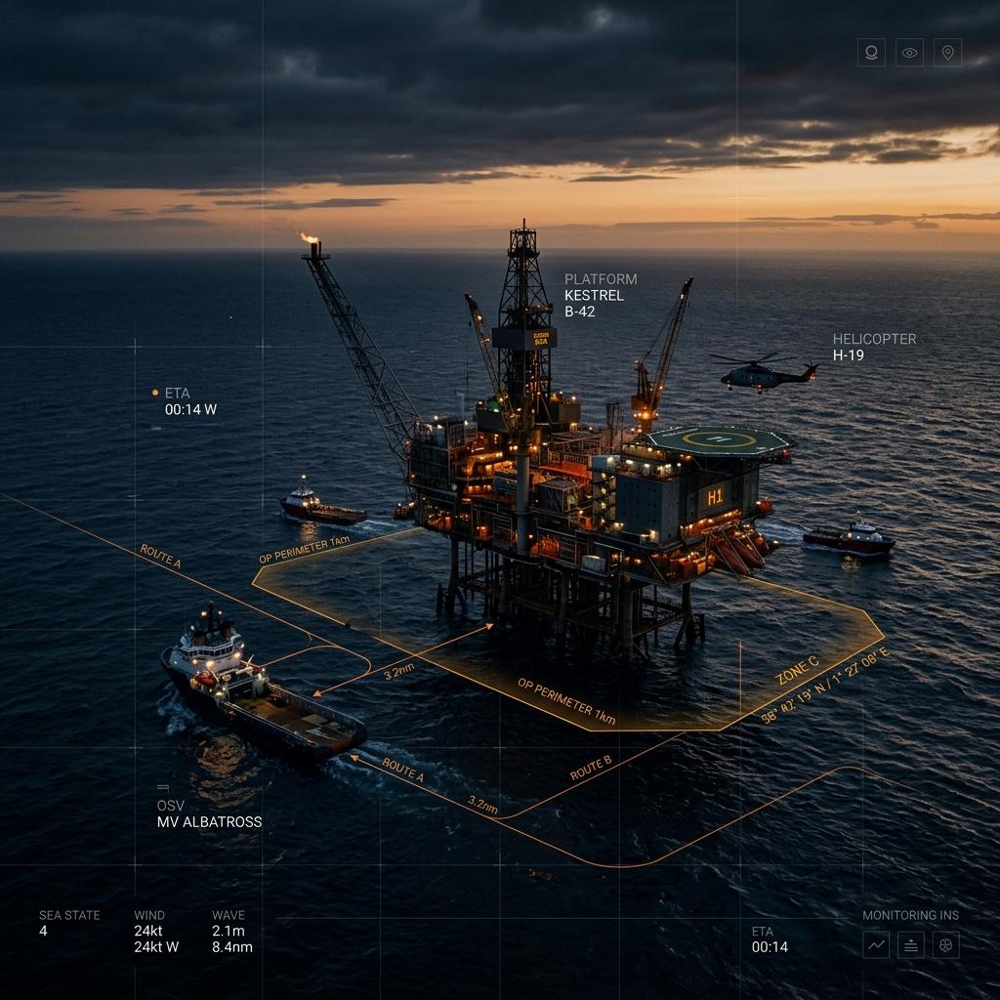
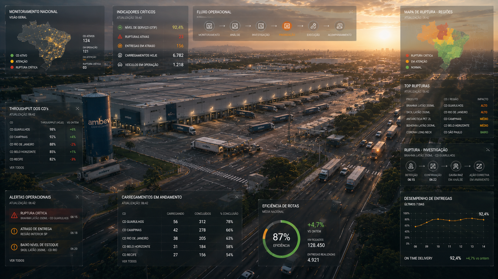
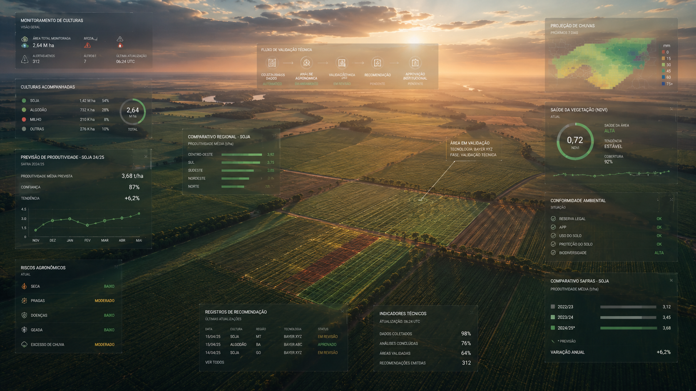
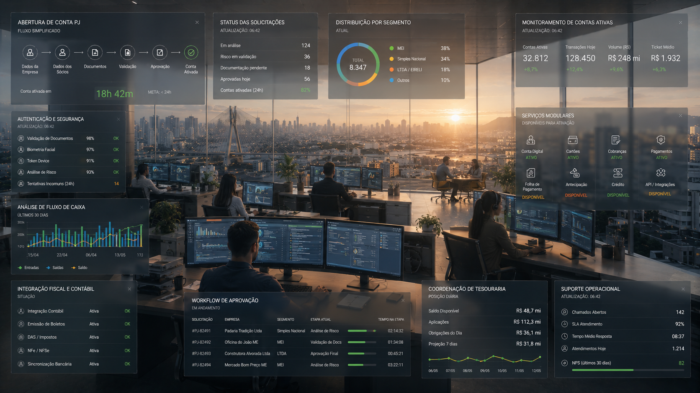

Território de atuação
- Plataformas enterprise
- Operações críticas
- Produtos B2B
- Sistemas regulados
- Dados operacionais
Antes da interface, organizo contexto, relações e regras para transformar complexidade operacional em superfícies de decisão mais claras.
CONTEXTO → ESTRUTURA → INTERAÇÃO → DECISÃO
Identifico informações, dependências e pontos críticos antes de qualquer definição visual.
Organizo conexões entre áreas, fluxos e regras para reduzir inconsistências e facilitar decisões.
Defino prioridades, hierarquias e contextos para tornar sistemas mais compreensíveis e navegáveis.
Transformo regras e necessidades operacionais em interfaces que ajudam pessoas a agir com segurança e clareza.
Projetos em energia, logística, agronegócio e finanças onde design reduziu ruído, reorganizou fluxos e tornou decisões críticas mais rastreáveis.

Coordenação offshore crítica para monitoramento ambiental e resposta operacional em tempo real.

Infraestrutura logística nacional para monitoramento distribuído e gestão de rupturas operacionais.

Sistema territorial de inteligência agronômica para análise ambiental e suporte à decisão agrícola.

Arquitetura financeira modular para operações PJ em ambientes regulados.
Evidências de escala, rastreabilidade e coordenação em sistemas enterprise, produtos regulados e operações críticas.
Consolidação de relatórios operacionais reorganizada para leitura contínua em contexto offshore.
Recepção de dados agrícolas consolidada em um ecossistema unificado de análise técnica.
Estrutura de supply chain organizada para leitura de disponibilidade, ruptura e coordenação logística.
Jornada PJ estruturada com validações, estados e fluxos aderentes a exigências operacionais e regulatórias.
20 anos na interseção entre design, produto, tecnologia e operação, projetando sistemas que ajudam pessoas a entender, decidir e agir com mais clareza.
Não comecei no design desenhando telas. Comecei organizando informação, navegação, fluxos e decisões.
Ao longo de 20 anos, trabalhei em produtos digitais complexos para empresas como Petrobras, Bayer, Ambev, Banco do Brasil, Bradesco, Claro, Globo, iFood e BMG, quase sempre em contextos onde a interface era apenas a camada visível de problemas maiores.
Meu trabalho está no ponto onde produto, operação, tecnologia e decisão se encontram. Antes de pensar em componentes, eu procuro entender o sistema: quem decide, com qual informação, sob qual pressão e com quais consequências.
Hoje, combino design, IA e pensamento sistêmico para acelerar diagnóstico, estruturar fluxos, organizar raciocínio e transformar complexidade em experiências mais claras, operáveis e sustentáveis.

Disponível para posições Senior, Lead ou Staff Product Designer em produtos enterprise, plataformas internas e ambientes regulados.
Busco oportunidades CLT ou PJ em times de produto, tecnologia e transformação digital.
Atuo em diagnóstico, estruturação de fluxos, arquitetura de informação, design de plataformas internas e sistemas operacionais complexos.
Aberto a trocas sobre IA aplicada ao design, design systems, produtos enterprise e visualização de decisão.